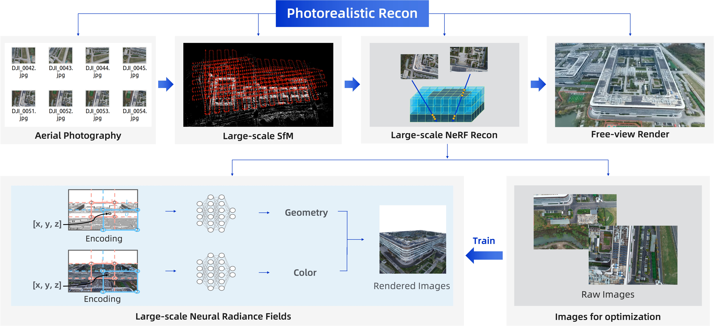
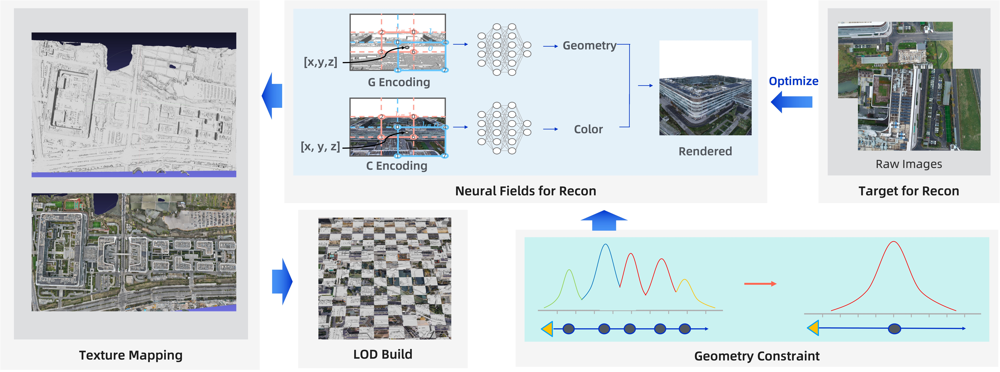
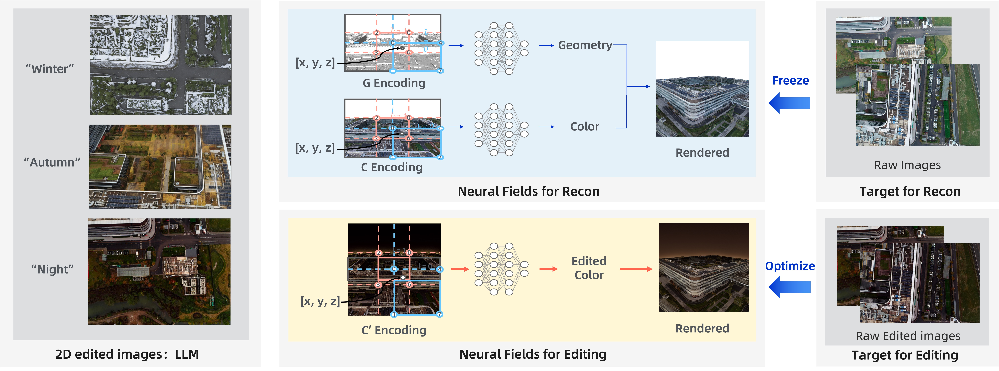
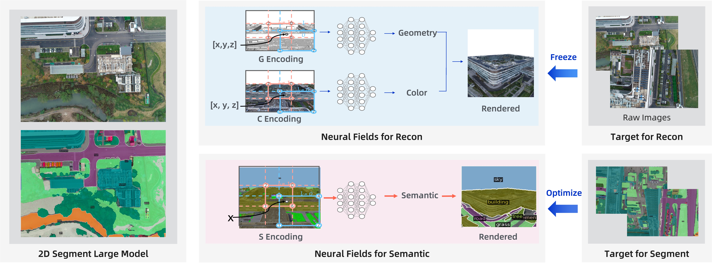

Abstract

LandShop is a Large-scale Neural Digital Twin System, which enables Photorealistic Reconstruction, LOD Textured Mesh Reconstruction, Neural Editing, and Neural Segmentation.
LandShop is a Large-scale Neural Digital Twin System, which enables Photorealistic Reconstruction, LOD Textured Mesh Reconstruction, Neural Editing, and Neural Segmentation.
We build a large-scale photorealistic reconstruction system based on large-scale SfM and large-scale neural rendering technologies.
Although the neural rendering could reconstruct a photo-realistic 3D scene, it is hard to be embedded into the traditional industries, e.g., oblique photography. These traditional industries have grown for several decades, and are already stable with the mesh as representation. To link to them, we add the geometry constraint to the neural reconstruction, and then extract the neural fields to a traditional mesh. Afterwards, we develop the large-scale texture mapping and level-of-details (LOD) technologies, which together enable our framework to be embedded into the traditional rendering engine. We also develop a rendering engine, named UniTIDE, for efficient large-scale rendering.
Based on the reconstructed 3D scene, we edit this scene to different seasons, time, weather, and so on.
Based on the reconstructed 3D scene or an arbitrary mesh of a 3D scene, we segment this scene to different areas.
